A shared scene representation
UGG represents RGB, depth, and camera geometry as spatially aligned modalities. A multimodal transformer exchanges information through shared self-attention and uses modality-specific layers.
1Harvard University 2MIT 3UC San Diego 4University of Cambridge
*Equal contribution
NeurIPS 2026
TL;DRA single model jointly generates RGB video, depth, and camera geometry, turning visual generation and geometric prediction into conditional completion of the same 4D scene.
Understanding 4D scenes is a core challenge in visual intelligence, requiring models to jointly capture scene geometry, appearance, and dynamics from partial observations. Existing approaches, however, are subdivided into feedforward models that are used for direct geometric prediction and generative models for visual synthesis. We propose a unified generative-predictive framework for 4D scene understanding that jointly models RGB video and geometric representations such as depth and camera pose with a single joint generative model. Our generative formulation enables us to learn from diverse, heterogeneous datasets with different subsets of geometric and visual annotations, and enables us to condition on arbitrary subsets of inputs, allowing a single model to perform cross-modal generation, geometric prediction, and future scene inference from partial observations. In addition, our generative approach enables test-time search over multiple candidate scene completions, improving geometric prediction from sparse observations. Overall, we illustrate the efficacy of our generative-predictive framework on a suite of generation and prediction tasks.
Choose a task. See what goes in, and what UGG generates.
Explore reconstructed scene geometry in an interactive 3D view.
The selected reconstruction and interactive viewer will go here.
Choose a case
Generate unseen views given observed frames and camera geometry.
Choose a case
Infer scene geometry from observed RGB frames.
Choose a case
Recover camera geometry from visual observations.
Choose a case
Generate appearance, depth, and camera motion from a text prompt.
Choose a case
Generation and prediction through a shared model of the scene.
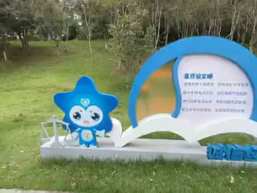
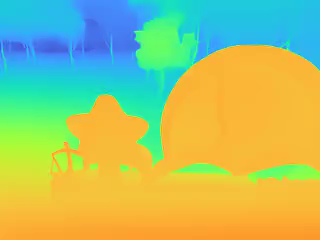
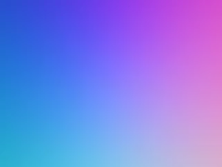
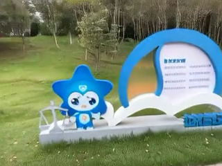
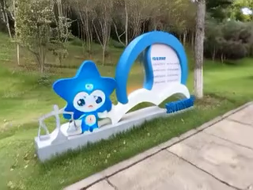
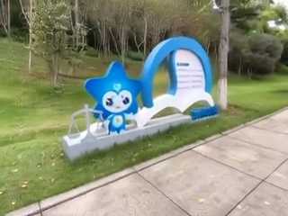
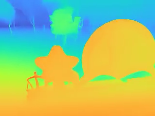
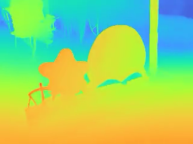
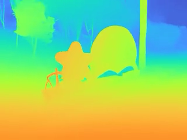
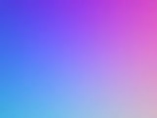
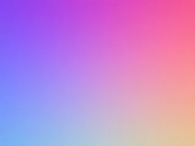
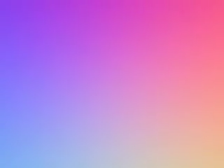
UGG represents RGB, depth, and camera geometry as spatially aligned modalities. A multimodal transformer exchanges information through shared self-attention and uses modality-specific layers.
Clean tokens provide context, while noisy tokens mark components to generate. Varying this pattern across modality and time lets the same model answer different prediction and generation queries.
The generative formulation supports multiple candidate scene completions. The paper explores selecting candidates using cross-modal consistency measured through photometric reprojection.
One model for generation and geometric prediction. Explore the results by task, observation setting, and dataset.
See Tables 1–4 in the paper. Interactive charts load when JavaScript is available.
↑ Higher is better. ↓ Lower is better. Bars start at zero; each dataset and metric has its own scale. Hover or focus a bar for its method and value.
Values from the UGG manuscript, Tables 1–4. UGG is labeled “Ours” in the paper. Bold, shaded cells mark the best non-oracle result within each comparison block, including ties. † TTS Oracle is a separate reference, excluded from best-result highlighting. These tables and the CSV are not filtered by the chart controls.
Cite UGG.
@inproceedings{kiruga2026ugg,
title={UGG: Unified Generative Geometry Model},
author={Kiruga, Amani and Li, Zhiyi and Cai, Ruojin and
Lillemark, Hansen and Wu, Xiaoshan and Tewari, Ayush and Du, Yilun},
year={2026},
booktitle={Advances in Neural Information Processing Systems}
}Publication details will be updated with the final paper link.